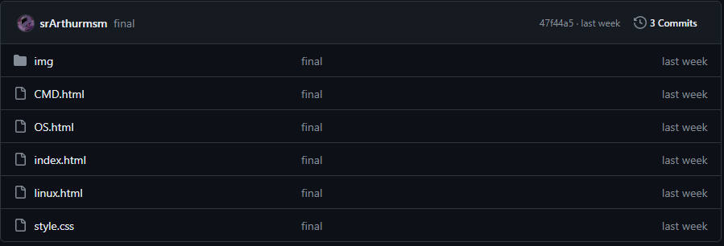
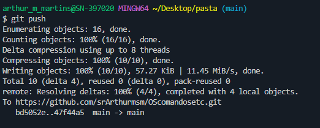

É um lugar onde você pode armazenar seu código, seus arquivos e o histórico de revisão de cada arquivo.
Deploy é a fase do ciclo de vida de um software, no contexto de um Sistema de Informação, que corresponde textualmente à passagem do software para a produção.
